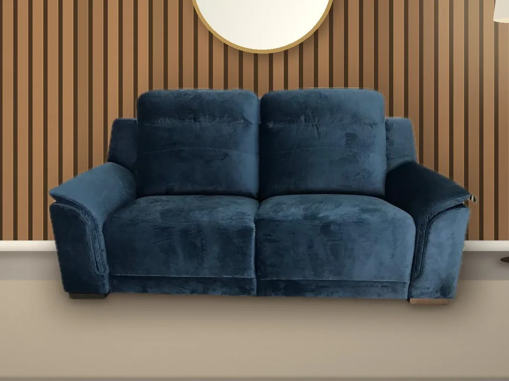
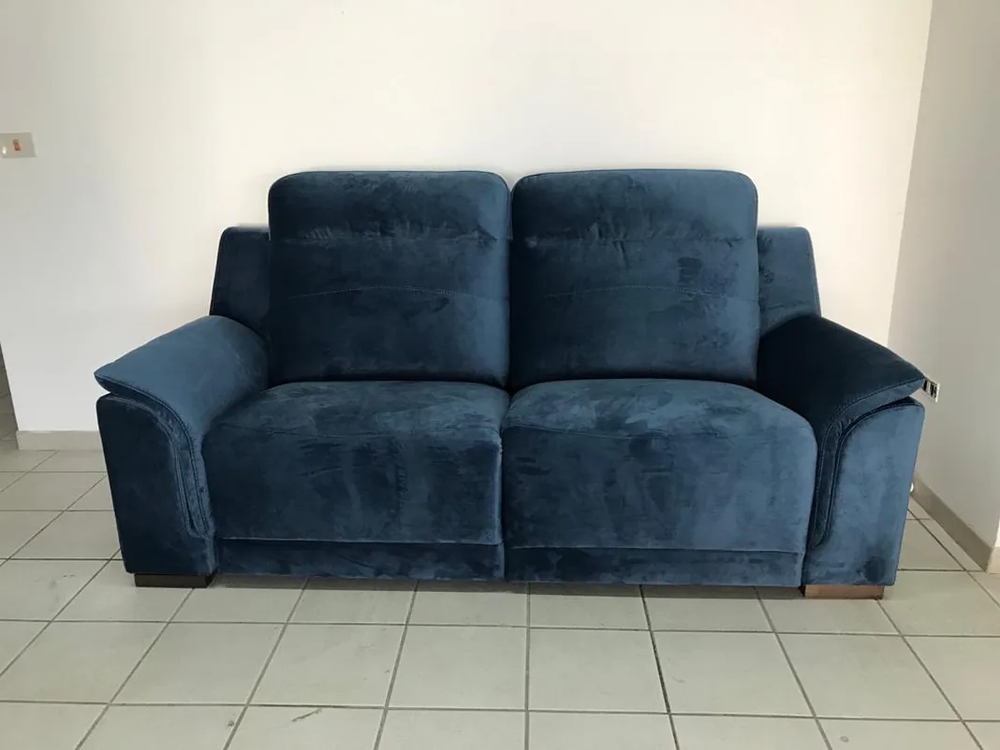
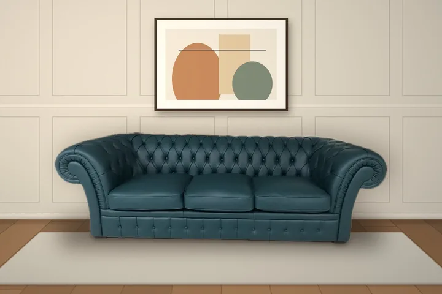
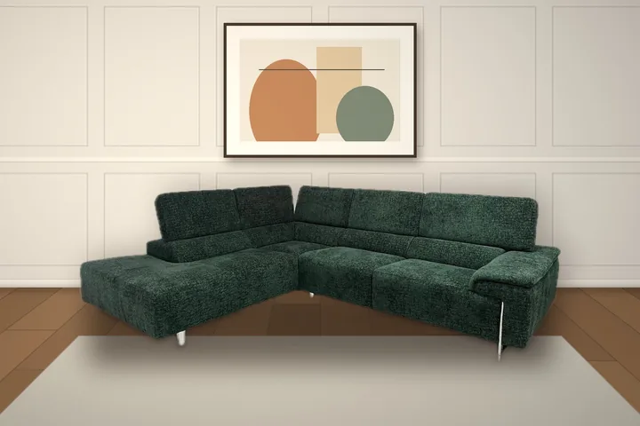
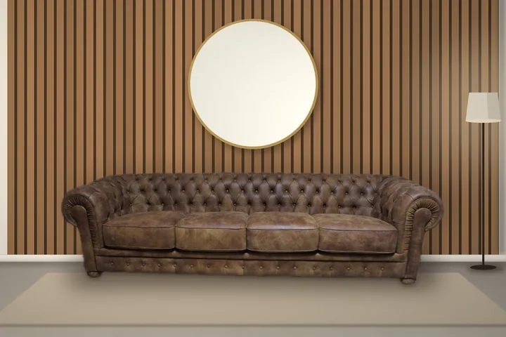
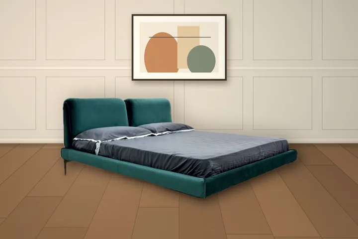
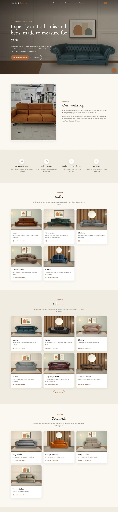

Nicoletti Raffaele
A bilingual showcase for an artisan sofa workshop — and a catalogue rebuilt from the workshop floor.


01 — The brief
Years of sofas, Chesterfields and upholstered beds — and no website at all.
My uncle designs and builds everything in his own workshop in Altamura. Customers arrived by word of mouth. He needed a place that shows the whole range, speaks to Italian and English visitors, and turns interest into a conversation — without a monthly bill or a content system to babysit.
02 — The photo problem
The products were beautiful. The photos were taken between foam, frames and fire extinguishers.
A studio reshoot wasn’t on the table. Instead I cut each product out of its original photo with Apple’s Vision framework on macOS and composited it into a small set of generated rooms — a wall, a floor, a rug, a lamp or a framed print — so that 36 products across five collections read as one catalogue.


Workshop floor Catalogue03 — Decisions
- The catalogue is dataEvery product is one line in a JavaScript file — image, name, Italian and English description. Adding a sofa never touches the layout.
- Private by defaultNo cookies, no analytics, self-hosted fonts, and Google Maps loads only after a click. Under EU rules the site needs no cookie banner.
- E-mail firstEvery “Ask for information” button opens an e-mail that already names the product. WhatsApp is there too, but second — that’s how the workshop likes to work.
- Two languages, one pageItalian and English side by side, a
?lang=enlink to send to foreign customers, and a proper preview when the link is shared on WhatsApp.




04 — The site
Warm, quiet and about the furniture — a serif for the craft, generous whitespace, one terracotta accent.

Hover to scroll